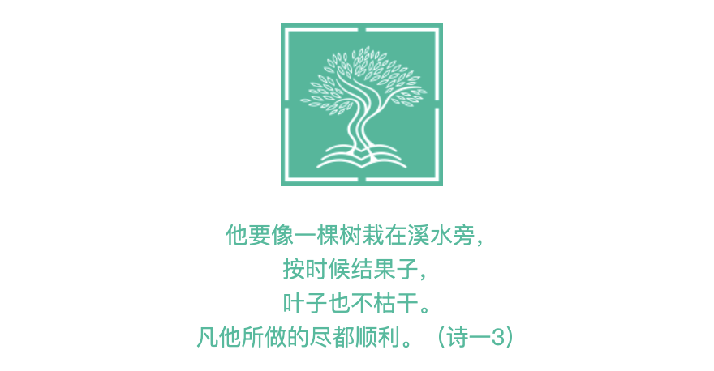

C·S·刘易斯的福音作品
C. S. 路易斯，又被译为鲁益师，是著名的英国作家和护教家，
《指环王》作者托尔金的挚友，一同在牛津大学任教。
C. S. 路易斯的神学和文学作品脍炙人口，被誉为「怀疑论者的使徒 The Apostle to the Skeptics」。
他的文笔风趣幽默尖锐辛辣，观点独到且一针见血。
《地狱来鸿》 、
《返璞归真》 和
《四种爱》
等都是非常优秀的基督信仰作品。
（注：上述作品链接来自高贵林国语教会 ，
他们还有许多其他非常好的福音资源，可点击链接查看。）
VIDEO
大卫鲍森牧师 - 旧约纵览与新约纵览
大卫·鲍森，当代著名的福音派牧师，擅长于圣经释经与基督教护教。
他出版30多本讲解圣经书籍，并将一系列演讲以影音制品广泛传播，造就了全球的影响力。他的新旧约纵览讲道系列生动风趣发人深省，
是很好的了解基督信仰的教程。团契所属的奥斯汀华人教会也专门开设了与新旧约纵览相关的主日学课程。
VIDEO
淡江教会 - 圣经逐节注解导读
“让圣经不再是墙上的装饰品。”自2017年起，淡江教会的庄育铭牧师开始推动“你也读得懂圣经”运动。
为了帮助更多人读得懂神的话语，他们建立了国度影音平台，在Youtube上也有国度影音的Channel，
提供逐章逐节的圣经研读，并深入浅出的从牧养，神学，历史，原文，解经等多个面向帮助大家理解圣经。

《圣经综合解读》不是学术性的解经，也不是灵修式的提示，
而是尽力为普通读者提供综合、简明、必要的历史、地理、文化和属灵的背景、注释，
并根据上下文及全本圣经的一致原则，对经文进行必要的解读（包括解释和应用），
同时提供语音朗读，可以作为读经、查经、讲道的释经参考。
本文是祷告的读书笔记，总结了圣经的教导和三十多位前辈圣徒的经验（奥古斯丁、马丁·路德、加尔文、劳伦斯弟兄、
欧文、班扬、马太·亨利、劳威廉、卫斯理、莱尔、慕勒、司布真、邦兹、慕迪、叨雷、亚历山大·怀特、约翰·海德、
章伯斯、平克、陶恕、C. S. 路易斯、钟马田、伦纳德·拉文希尔、斯托得、巴刻、大卫·鲍森等）。本文也是祷告的操练笔记，并非站在岸上的观察，而是亲身试水的体验，
盼望可以鼓励大家下水尝试。
巴刻一生著作等身，致力于让基督徒在生活的各个方面都能正确地思考、关注应该关注的重点。
其中《认识神》、《传福音与神的主权》、《活在圣灵里》都广为人知。
本书为基督徒提供了一个在圣灵生活的指南，探讨了灵恩运动的优点和缺点。在一个充满混乱和欺骗的时代，这本书能帮助我们清楚地认识圣经关于圣灵的真理，
真正接受圣灵的引导。
《基督教要义》是基督教经典中的经典，深刻影响了世界历史，孕育了民主体制，促进了资本主义，塑造了法语文学；
更是信徒的敬虔大全，读经的系统预备，教会的治理指南，神学的必读教材。《基督教要义》并非艰深的神学，
而是为了帮助信徒带着问题去读圣经。因此，在过去五百年里，每当社会出现危机、根基开始动摇、人心感到恐慌的时候，
人们就会带着崇敬之心，重新研读这部经典。